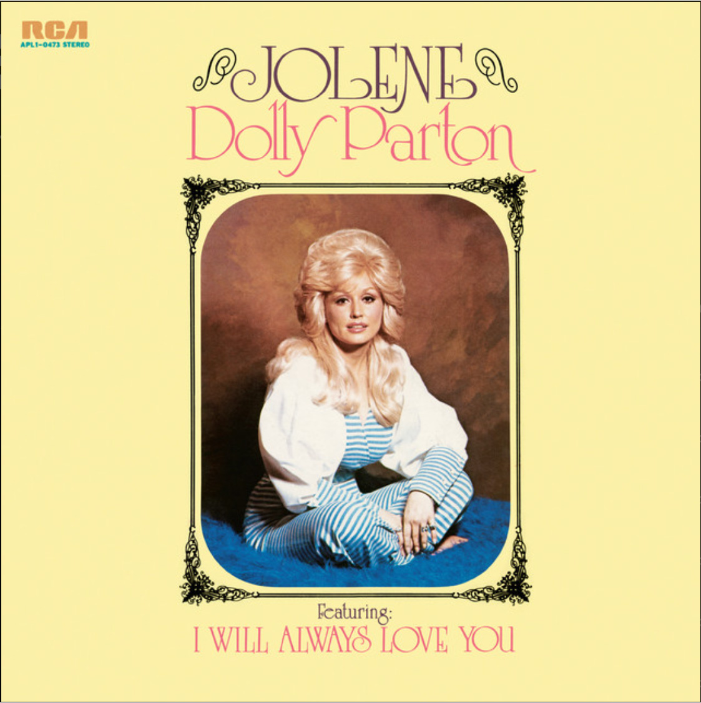
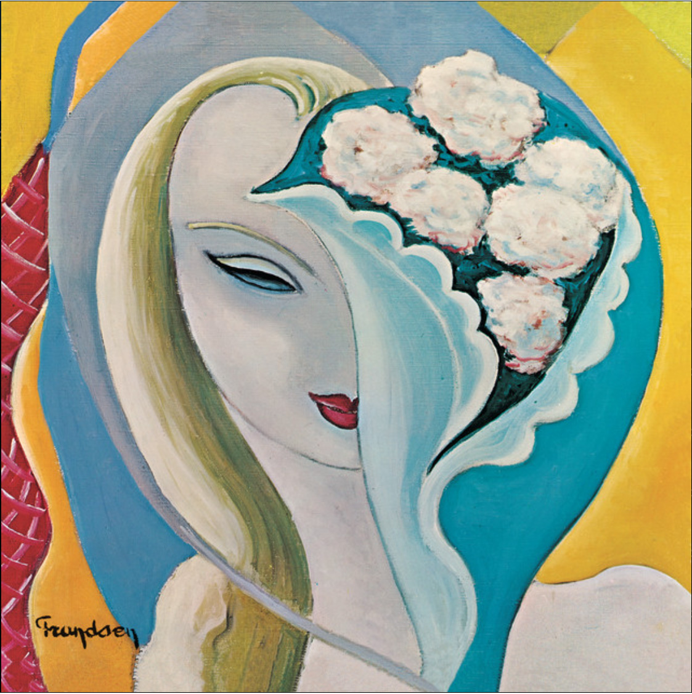
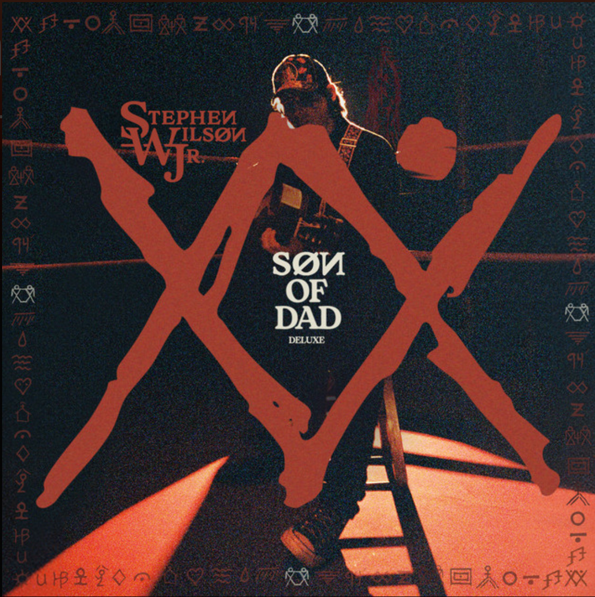
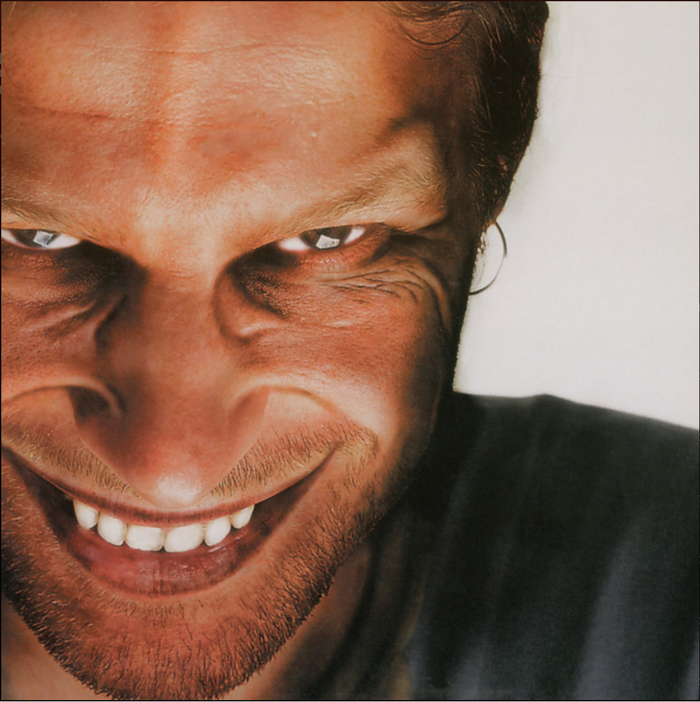

2026-03-12
Since I work as a programmer and spend much of my day sitting in front of screen, I tend to listen to a lot of music. Last year I started keeping track of all the new albums I was listening to and thought it would be fun to rate them. Every hundred albums I like to highlight a few that surprised me in some way. This post covers albums 101-200. Click here to see what I highlighed from the first 100.

★★★★★★★★☆☆
One of the stories I used to tell myself is that I hated country music. I suppose that was because I thought it wasn't cool or I thought it was "redneck" music. But as I've been listening to more albums I've come to find that there is quite a bit of good country music. The thing that resonates with me is authenticity and you'd be hard pressed to find a more authentic person than Dolly. I had obviously heard Jolene before but I had no idea that I Will Always Love You was a Dolly song. Whitney's is better but still... This is a beautiful, authentic, country album about love and loss but mostly about lonley love.

★★★★★★★★★☆
Going into this album I honestly didn't have very high hopes. I had listened to Fresh Cream and Desraeli Gears and was not overly impressed. Not to say that they weren't good albums but they just weren't what I expected to hear and not what comes to mind when I think of Eric Clapton. Layla And Other Assorted Love Songs, however, is exactly what I thought it would be. Beautiful song writing and bluesy guitars that you can't help but air-guitar along with.
★★★★★★★★★☆
I'm a sucker for what you might call "epic" albums. I'm also a sucker for concept albums. Good pop music is a guilty pleasure of mine. Probably why I love Coheed and Cambria so much...but I digress. LUX is ALL of these but its the uniqueness of it that takes it to another level. Rosalia sings in 13 different languages and yet I challenge you to notice when the language changes. She sings flawlessly in all of them. It almost feels to me like this album is a modern-day opera.

★★★★★★★★☆☆
I first heard of Stehpen Wilson Jr. when his song Gary was playing on the Xfinity Music Choice channel in my living room and I was intrigued because my parents names are Gary and Debbie. So, I looked him up on Spotify and found this album. Remember what I said about authenticity and country music...this album is exactly what I'm talking about. I love the guitar, his voice, and the stories he tells in his lyrics. I feel like many Americans can relate to the rat-race described in Cuckoo, American Gothic likely describes the childhood of many a lower-middle class kid growing up in the 80s and 90s and Year to be Young 1994 might as well be the anthem of my
middle school and early high school years. The only thing holding this album back from being a perfect 10 in my book is simply that it does drag on a bit too long.

★★★★★☆☆☆☆☆
I've seen this one hyped up on list after list and the best I can say about it is "meh". I don't know, I just feel like I'm missing something here. If anyone can explain it to me I'm all ears.